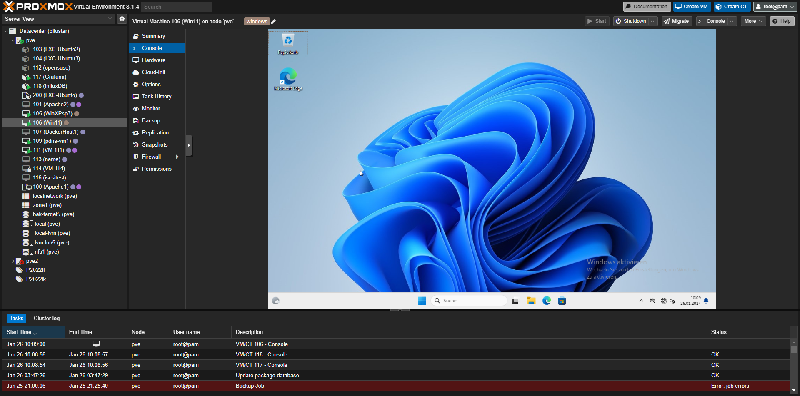
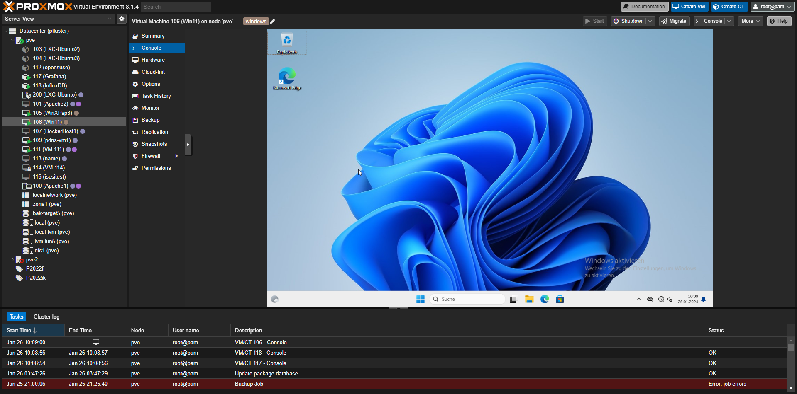

Virtualisierungsserver Einrichten (Proxmox)
Erstellt für: EDV-Schule Plattling
Abgegeben am: 26.01.2024
Beschreibung:
Proxmox wurde installiert und für die Schule konfiguriert. Unser Cluster greift vom LDAP-Server der Schule die Benutzerkonten ab. Dadurch kann sich jeder Schüler anmelden und in dem seiner Klasse zugewiesenen Pool VMs und Container erstellen. Im rahmen des Projekts wurde eine Anleitung erstellt.
Weitere Teilnehmer: Heinrich Thaler
Verwendete Hardware:
- 2x PCs
- 1x Linux-Maschine für Backup und drittes Quorum Vote
Galerie:
 
